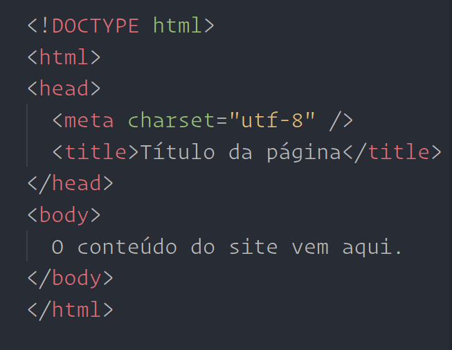

O que é CSS?
Cascading Style Sheet

Para que serve o CSS?
As folhas de estilo servem para estilizar o nosso conteúdo HTML. O CSS permite alterar cores, planos de fundo, tipografias, alturas, larguras, etc. Também permite gerar animações e transições.
Inserindo CSS na sua página
Há três métodos para vincular documentos HTML ao CSS:
Atributos HTML
Os atributos HTML servem para inserir informações adicionais ao elemento:
...
Elemento HTML
Um elemento HTML é o conjunto formado pela
tag + atributos + conteúdo dentro dela
Isso é um título
Estrutura básica de um documento HTML
Nomenclatura de arquivos
1. Sempre usar minúsculas.
2. Nunca usar espaço entre as palavras.
Usar "_" ou "-" para separar.
3. Nunca usar caracteres especiais
como acentos, "!", etc.
Cabeçalhos
Tag semântica que permite gerar um título ou subtítulos.
Título principal
Subtítulo
Outro subtítulo
Mais um subtítulo
Outro, por que não?
Agora sim, o último
Atenção
Seu site deve conter apenas um
elemento <h1> por página!
Parágrafos
Tag que permite gerar blocos de texto em forma de parágrafos.
Lord Vader. You may take Captain Solo
to Jabba the Hut after I have Skywalker.
Listas Ordenadas
Tag usada para listar itens de maneira consecutiva.
Por padrão, usa marcadores numéricos, começando pelo 1. É possível alterar o marcador.
- Item da lista
- Item da lista
- Item da lista
Listas desordenadas
Tag usada para listar itens de maneira consecutiva.
Por padrão, usa marcadores do tipo "bolinha" (bullet). É possível alterar o marcador.
- Item da lista
- Item da lista
- Item da lista
Atributos das Listas
O atributo type permite alterar o tipo de marcador de cada lista. O start permite definir por qual número queremos que a lista comece.
...
...
...
...
...
...
...
...